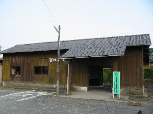
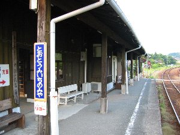

気田ホタルまつり | ２００３年６月７日 |
|---|---|
| たった１０日間の光の乱舞を鑑賞しに、静岡県西部に位置する春野町にいずみ、ゾウ、じゅんじゅん、のび太、シュガー、そして私（べっしー）の６人で行きました。 静岡からいずみさんの愛車ＢＭＷ-Ｚ３を運転させてもらった。 この日は天気は薄曇りなれど風が心地よく、幌をたたみオープンタイプで田園地帯を快走！ ぎもちい〜〜〜〜〜〜〜いっ！ 安い私の頭は、アメリカの大平原をオープンカーで走っている映画のようなワンシーンを思い浮かべていました。（なんのこちゃ！） 予定より早く到着しそうだったので、いずみさんの提案により駅舎が蕎麦屋になっているという「とうとうみいちのみた駅」の「ももや」へ針路変更。 しかーし、一日50食というその店に、夕方5時過ぎに行ったのだから無理はないが、ももやは閉店していた。 仕方なく、その蕎麦屋の有る無人駅を探索する。そこはまるで「鉄道員」に出てくるような駅だった。しかも駅員いないし。 蕎麦から頭が離れなかった二人は、近くの蕎麦屋で手打ちざる蕎麦を食する。 そこの蕎麦は、本当に手打ちらしく蕎麦がうどんのように太い！そしてなぜかアガリスク茸だかを進められる。 余計な時間を食ったせいか、集合時間に若干遅れる。（決して飯を食っていたからでは無いと思いたいが・・・） 途中で乗り合わせて車の台数をを少なくして、ホタルまつり会場の気田スポーツ広場へ向かう。 | |
|  誰もいない駅舎 |  素朴な「とうとうみいちのみや駅」 |
| ７時くらいに現地到着。祭りは既に始まっていた。 広場の真ん中に櫓が建ち、盆踊りのような演歌のような音楽が流れていた。昔ながらの地元のお祭りって感じです。 その周りに露天が立ち並び、お目にかかったことがないようなモノを売っていた。 本マグロステーキ、イタスパスティック。う〜ん、最近こんな祭り行ったこと無いからな〜 ちなみに、イタスパはいまいち。細すぎて食べた気がしない。 ちょっと買い食いしてホタルが現れる小川（池）へ。今年は例年より少ないそうであるが、ちらほらと光を放っている。 以外に強い光を放っている。スーと緑色にひかり、スーと消えていく。う〜ん、ホタルだね〜♪（写真は上手く撮れず掲載なし） 帰り道、行きと同じくいずみさんの車で帰るが、のびちゃんの言うとおりに「川根に抜けた方が早いんじゃない？」と言うことで、山道を選んだのが間違い！（いや、のびちゃんのせいにするつもりは無いのだが） 真っ暗な森の中、道はどんどん細くなるし、車は通らない。カエルは踏むし、狸は二匹も目の前を通る。いい加減時間がかかったね。 しかし、ほのぼのとする良いお祭りでした。 | |
 ホタル祭り会場の出店 |  盆踊り会場とかすホタル祭り |